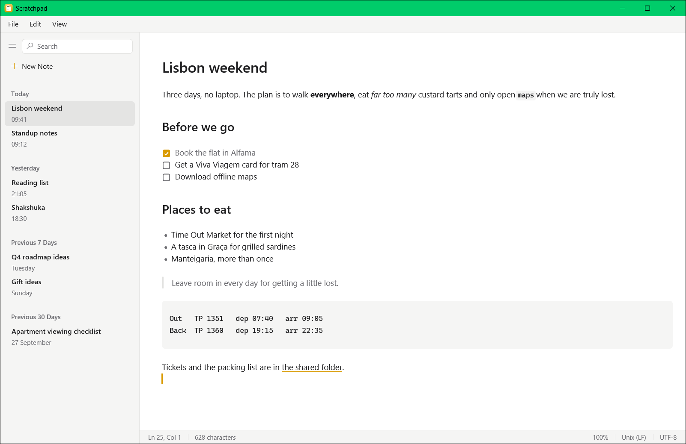
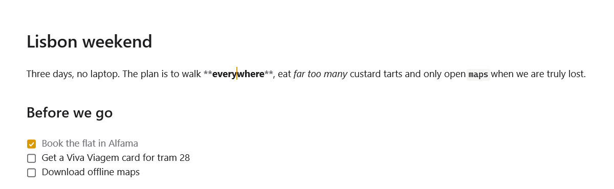
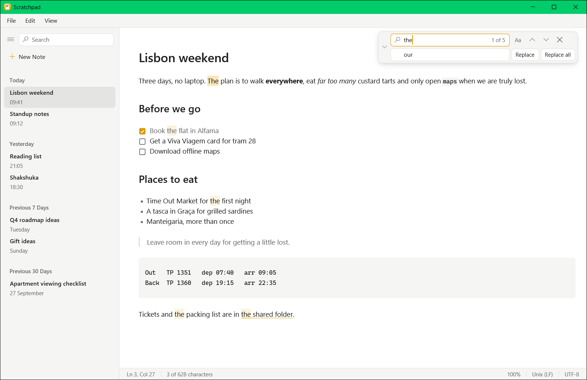
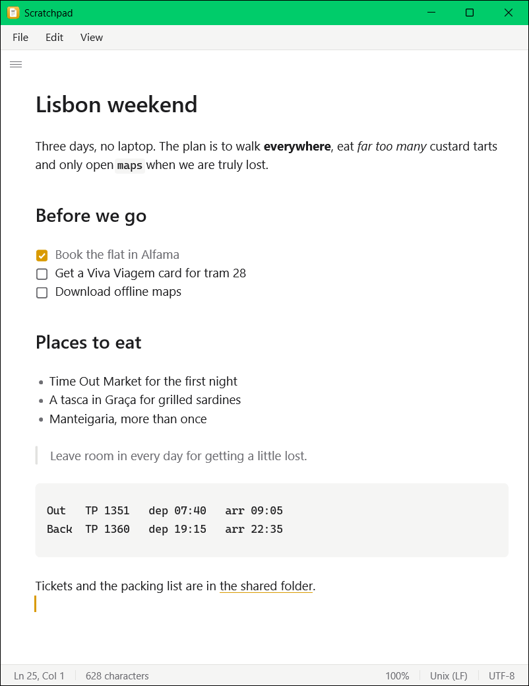

Notepad, with Markdown.
A fast, native Markdown scratchpad for Windows. Your notes are plain .md files in
a folder you own; headings, lists and links take shape as you type, and every note saves itself.

Everything you reach for in Notepad, and then some
Live preview
Headings, emphasis, lists, task boxes, links and code are styled as you write. Markdown markers show only where the caret is; Ctrl+/ shows them all.
Saves itself
Every note is saved a moment after you pause, at least every two seconds while you type, and whenever you switch notes or apps. Ctrl+S still works.
Crash recovery
Unsaved text is snapshotted while you type and offered back after a crash. If another program changes a note you are editing, you choose which version to keep.
Search every note
Ctrl+Shift+F searches the text of all your notes. A thousand notes take a few milliseconds once warm.
Find, replace, go to line
Ctrl+F and Ctrl+H in the note, with match case and replace all. Ctrl+G jumps to a line.
Notepad habits
File, Edit and View menus, a status bar, word wrap, zoom from 50% to 400%, a source mode, and the Windows editing keys you already know.
Opens any text file
Ctrl+O edits a file where it lives. .txt and other non-Markdown files open as plain text; Save As writes a copy and carries on there.
Markdown shortcuts
Bold, italic and links on Ctrl+B / I / K. Lists and quotes continue on Enter; Tab nests a list item.



Your notes are just files
- Press Ctrl+N and type. The first line is the title and becomes the file name.
- Keep them anywhere. Notes live in
Documents\Scratchpadunless you pick another folder in Settings. - Edit them with anything. Git, a sync client or another editor can change them; Scratchpad reloads a note, and never silently overwrites changes it did not make.
- Delete without fear. Scratchpad asks first, then moves the note to the Recycle Bin.
Under the hood
- Native, no browser. Rust and GPUI, drawn on the GPU. A 7.8 MB executable and a 2.5 MB installer.
- Rope buffer. A keystroke in a 10 MB note takes microseconds, undo included.
- Incremental Markdown parsing. An edit re-parses only the blocks around it.
- Virtualised rendering. Only visible lines are laid out, so text appears about 4.5 ms after a keystroke (median), even in a 10 MB note.
- Atomic saves. Each save writes a temporary file, flushes it and renames it over the note, so a crash never leaves a half-written file.
- Tested and written down. Over 600 automated tests, including end-to-end tests that drive the real UI headlessly, and 66 decision records explaining why it works the way it does.
Get Scratchpad
# Build and run from source
> git clone https://github.com/waterrmalann/scratchpad.git
> cd scratchpad
> cargo build --release -p scratchpad
> .\target\release\scratchpad.exe
# Or build the installer (needs the .NET SDK)
> powershell -File packaging/build-installer.ps1Requires Windows 10 or 11, the Rust toolchain (MSVC) and the Windows SDK. The MSI installs for your user only, without administrator rights, and uninstalling leaves your notes and settings alone. There is no prebuilt download yet.